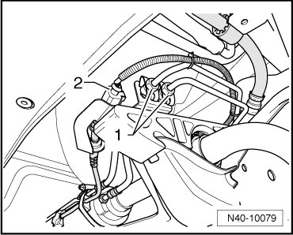
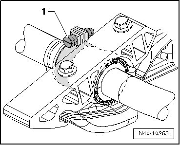
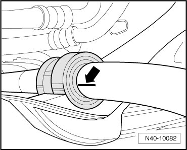
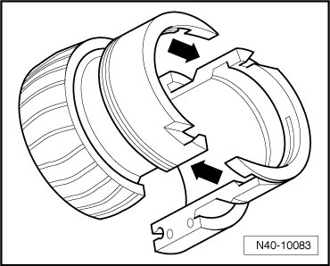
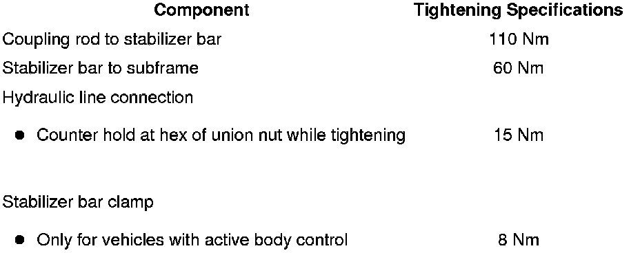

Separable Stabilizer Bar
Separable Stabilizer Bar
Special tools, testers and auxiliary items required
• Torque wrench (VAG 1331)
• Torque wrench (VAG 1332)
Removing
CAUTION!
Before starting work, stabilizer bars must be coupled in vehicles with separable stabilizer bars. Otherwise, there is the danger of injury caused by unintentional separation.
- Depressurize hydraulic system using.
- Remove front noise insulation..
- Disconnect both hydraulic lines - 1 - and electrical connection - 2 -.

Lines and wires must not be mixed up when connecting!
- Check whether color marking is present on front in driving direction. If no longer present, apply a new one.
- When loosening hydraulic lines, counter hold using open-end wrench.
With Active Body Control
- Remove the stabilizer bar clamp - 1 -.

Continuation for All
- Remove stabilizer bar clamps and mark installation position of stabilizer bar bearing on stabilizer bar - arrow -.

- Remove stabilizer bar from coupling rods.
Installing
Installation is performed in the reverse order of removal.
- Install stabilizer bar bearing halves - arrows - on stabilizer bar. Note the following:

• Markings applied on stabilizer bar when removed
• Larger outer diameter of stabilizer bar bearing halves must face vehicle outside
With Active Body Control
- Install the stabilizer bar clamp - 1 -.
Continuation for All
After installation, hydraulic system must be bled using. Refer to --> [ Separable Stabilizer Bar, Bleeding ] Procedures.
Tightening Specifications

- Install front noise insulation..